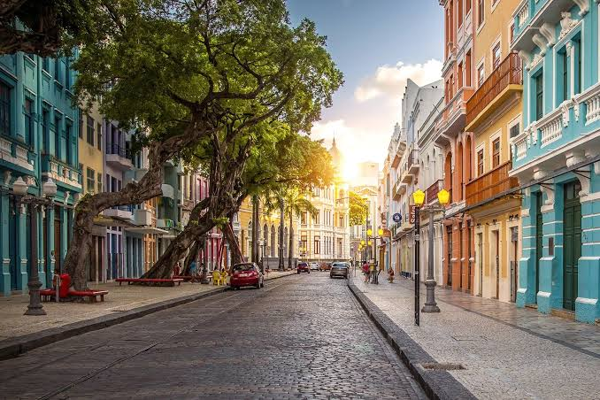
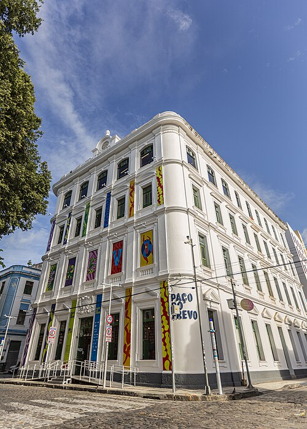

Uma cidade de histórias e encontros.
Conhecida como Veneza Brasileira, Recife possui uma paisagem marcada por rios, pontes e ilhas. Sua história é resultado de diferentes influências culturais que construíram a identidade pernambucana.